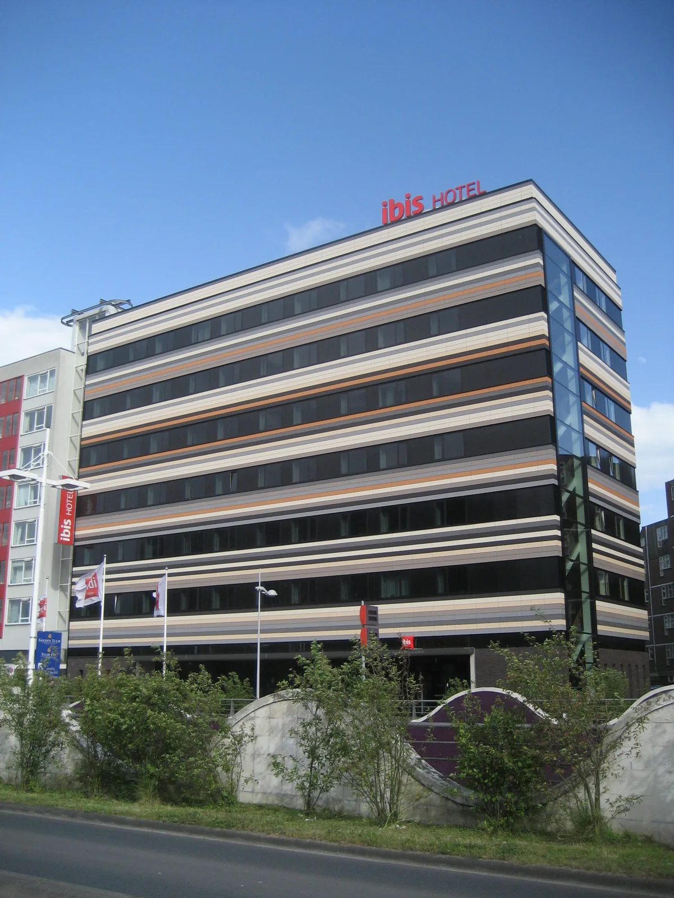
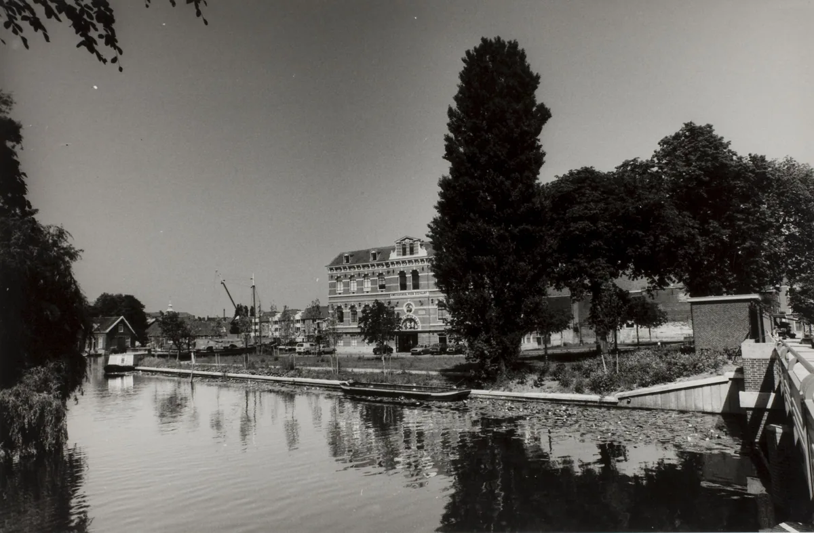
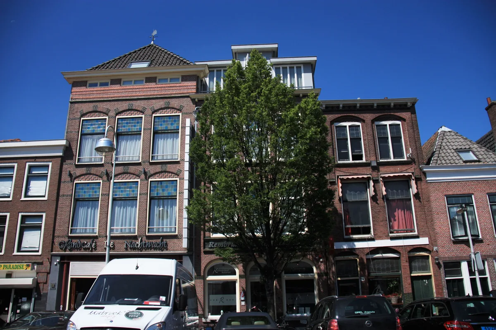
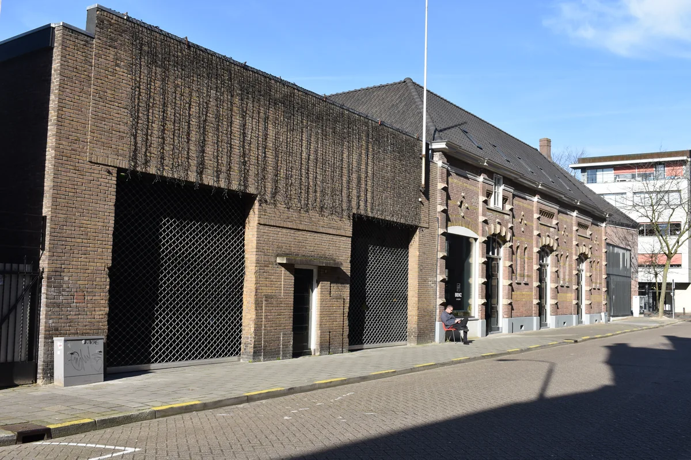

Пять фотографий: пакет для визуального одобрения
16 ноября 2026 · Draft PR №75
Публикация не разрешена. Один условный кандидат для главной фотографии, четыре — для архивной галереи. Ещё четыре карточки остаются без подходящего фото. Все снимки исторические; ни один не выдаётся за актуальное состояние.
Это рекомендации по размещению, а не разрешение на публикацию. Существующее техническое превью показывает кандидатов в медиа-блоке карточки; согласование этого пакета не означает согласие использовать архивные снимки как главные. Будущий выпуск должен отдельно применить одобренное размещение.
Решения по размещению
| Карточка | Рекомендация | Замена главной фотографии |
|---|
| Rembrandtpark | Только архивная галерея | Нужна |
| ibis Leiden Centre | Для главной фотографии — условно | Желательна современная |
| City Hotel Rembrandt | Архивная галерея; главную заменить | Нужна |
| Kazerne BarBistro | Только архивная галерея | Нужна |
| Supernova Hotel | Архивная галерея; главную заменить | Нужна |
ibis Leiden Centre
Для главной фотографии — условно
Фасад и вывеска отчётливо узнаваемы. Подпись «май 2014» обязательна; современный вид и состояние не подтверждены. При строгом требовании актуального фото — заменить.

Vysotsky · Leiden224 · 2014-05-09 · Archive photograph / Archieffoto · resized / verkleind, WebP; no content edits / inhoud ongewijzigd
Первоисточник · CC BY-SA 3.0EN: Facade of ibis Leiden Centre at Stationsplein, photographed in May 2014
NL: Gevel van ibis Leiden Centre aan het Stationsplein, gefotografeerd in mei 2014
1200×1600 px · SHA-256: 13146b3ab2d7b20290497d443c9145a1dff2c61caec21f843d85c5e48d17d280
Rembrandtpark
Только архивная галерея
Июль 1986 года. Не использовать как изображение текущего состояния парка; для главной фотографии нужен современный снимок.

Gemeente Leiden Afdeling Monumentenzorg; Erfgoed Leiden en Omstreken · 'Prins Hendrik', Objectnr PV PV29329R.5 · 1986-07 · Archive photograph / Archieffoto · resized / verkleind, WebP; no content edits / inhoud ongewijzigd
Первоисточник · CC0EN: Historical view of Rembrandtpark across the Witte Singel, with the former nautical school; July 1986
NL: Historisch zicht op het Rembrandtpark over de Witte Singel, met de voormalige zeevaartschool; juli 1986
1200×787 px · SHA-256: dfb13bdffdc972bb7c121b6e767f22a5ddb34dcf65adc28d3b092ff2adf93453
City Hotel Rembrandt
Архивная галерея; главную заменить
Июль 2015. Дерево и автомобили закрывают часть фасада/вывески; это вид улицы, а не ясный портрет отеля.

Xsandriel · Nieuwe beestenmarkt 8, 10-12, 14 · 2015-07-10 · Archive photograph / Archieffoto · resized / verkleind, WebP; no content edits / inhoud ongewijzigd
Первоисточник · CC BY-SA 4.0EN: City Hotel Rembrandt among the facades at Nieuwe Beestenmarkt 8–14, partly obscured by a tree; July 2015
NL: City Hotel Rembrandt tussen de gevels aan de Nieuwe Beestenmarkt 8–14, deels achter een boom; juli 2015
1200×800 px · SHA-256: 598fbda97a92a1cf13741e206ca6b631fd6bce83f44c17fe6603b7de1a72306d
Kazerne BarBistro
Только архивная галерея
Март 2020. Прежняя вывеска Benz; это исторический фасад комплекса, не текущий интерьер BarBistro. Нужна новая главная фотография.

Rosemoon · 0772 WN176 Paradijslaan 4, 4a, 6, 6a, Eindhoven · 2020-03-17 · Former Benz sign / Toenmalige Benz-aanduiding; archive photograph / archieffoto · resized / verkleind, WebP; no content edits / inhoud ongewijzigd
Первоисточник · CC BY-SA 4.0EN: Street facade of the Kazerne complex at Paradijslaan in Eindhoven, with historical Benz signage; March 2020
NL: Straatgevel van het Kazernecomplex aan de Paradijslaan in Eindhoven, met de toenmalige Benz-aanduiding; maart 2020
1200×800 px · SHA-256: 6423398ec6c729222fa3a884ab5b8904ec79c0124e697396b1318373b56fd010
Supernova Hotel
Архивная галерея; главную заменить
Сентябрь 2022. Временный декор воздушными шарами, не обещание оформления при бронировании. Новый файл 1024×768, без увеличения; для главной фотографии предпочтителен нейтральный актуальный кадр.
 Rotterdams Ballonnenbedrijf · Heliumballonnen Super Deluxe Kamer Supernova Hotel Rotterdam · 2022-09-03 · Temporary balloon arrangement / Tijdelijke ballonversiering · resized / verkleind, WebP; no content edits / inhoud ongewijzigd
Rotterdams Ballonnenbedrijf · Heliumballonnen Super Deluxe Kamer Supernova Hotel Rotterdam · 2022-09-03 · Temporary balloon arrangement / Tijdelijke ballonversiering · resized / verkleind, WebP; no content edits / inhoud ongewijzigd
Первоисточник · CC BY 2.0EN: Super Deluxe room at Supernova Hotel, with temporary pink balloon decorations by Rotterdams Ballonnenbedrijf; September 2022
NL: Super Deluxe-kamer in Supernova Hotel, tijdelijk versierd met roze ballonnen door Rotterdams Ballonnenbedrijf; september 2022
1024×768 px · SHA-256: ba78c398b0962c7e430e89be785bd42f7cc96a65b63245dc8a8aca328ea669f0
Четыре незакрытых пропуска
Kaafi
Официальный сайт подтверждает адрес, но не даёт разрешения на повторное использование фотографий. В прежнем поиске Commons/Openverse подходящий снимок именно Kaafi не найден; новые поиски пресс-материалов не дали подтверждённой лицензии. Нужен собственный снимок или письменное разрешение.
Официальный источник · Запрос разрешения подготовлен, не отправлен.
Koffie Leute
Flickr 7913701884: CC BY-SA 2.0 и автор Nelleke Poorthuis подтверждены первоисточником. Однако виден только процесс приготовления кофе на стойке с логотипом, без идентифицируемого помещения Westerkade 30. Дата в модели Flickr — 2012-09-02 с флагом isDateTakenUnknown=true, поэтому точную дату съёмки не утверждаем. Как главная фотография нынешнего кафе отклонён.
Официальный источник · Запрос разрешения подготовлен, не отправлен.
The Collector
Официальная галерея и FAQ не дают проверенного разрешения на повторное использование. Пресс-релиз WorldHotels содержит фото отеля, но разрешение на распространение этого файла в публичном GitHub и производных WebP не подтверждено; прежняя проверка пресс-условий выявила ограничение передачи третьим лицам. Фото общего Haagsche Bluf не доказывает изображение отеля. Нужен точный файл с подходящими правами.
Официальный источник · Запрос разрешения подготовлен, не отправлен.
The Nox Hotel Utrecht
FAQ прямо требует разрешения для коммерческого использования фото сайта и соцсетей. Ранее найденные Commons-фотографии относятся к другим номерам Keistraat. Фото именно Keistraat 8 с подходящей лицензией не подтверждено; требуется разрешение или собственный снимок.
Официальный источник · Запрос разрешения подготовлен, не отправлен.
Сохранность и границы
Все 15 ранее подготовленных WebP и пять доказательств лицензий сохранены побайтно. Исходные фотографии повторно не скачивались. Прежний Supernova 1200 px сохранён только как свидетельство: не копируется в сайт и не входит в srcset. Новый 1024 px получен из ранее сохранённого JPEG 1024×768.
SHA-256 партии: 88fa7dfe1c8abe5fe1cbc9a7994c70ca7c138063b870c16a0353ba6486afa677
Лицензии и происхождение · Машиночитаемое решение · Неотправленные запросы разрешения